Last updated: 2021-07-07
Checks: 7 0
Knit directory:
VSA_altitude_hold/
This reproducible R Markdown analysis was created with workflowr (version 1.6.2). The Checks tab describes the reproducibility checks that were applied when the results were created. The Past versions tab lists the development history.
Great! Since the R Markdown file has been committed to the Git repository, you know the exact version of the code that produced these results.
Great job! The global environment was empty. Objects defined in the global environment can affect the analysis in your R Markdown file in unknown ways. For reproduciblity it’s best to always run the code in an empty environment.
The command set.seed(20210617) was run prior to running the code in the R Markdown file.
Setting a seed ensures that any results that rely on randomness, e.g.
subsampling or permutations, are reproducible.
Great job! Recording the operating system, R version, and package versions is critical for reproducibility.
Nice! There were no cached chunks for this analysis, so you can be confident that you successfully produced the results during this run.
Great job! Using relative paths to the files within your workflowr project makes it easier to run your code on other machines.
Great! You are using Git for version control. Tracking code development and connecting the code version to the results is critical for reproducibility.
The results in this page were generated with repository version a683bb1. See the Past versions tab to see a history of the changes made to the R Markdown and HTML files.
Note that you need to be careful to ensure that all relevant files for the
analysis have been committed to Git prior to generating the results (you can
use wflow_publish or wflow_git_commit). workflowr only
checks the R Markdown file, but you know if there are other scripts or data
files that it depends on. Below is the status of the Git repository when the
results were generated:
Ignored files:
Ignored: .Rhistory
Ignored: .Rproj.user/
Ignored: renv/library/
Ignored: renv/staging/
Note that any generated files, e.g. HTML, png, CSS, etc., are not included in this status report because it is ok for generated content to have uncommitted changes.
These are the previous versions of the repository in which changes were made
to the R Markdown (analysis/characterise_data.Rmd) and HTML (docs/characterise_data.html)
files. If you’ve configured a remote Git repository (see
?wflow_git_remote), click on the hyperlinks in the table below to
view the files as they were in that past version.
| File | Version | Author | Date | Message |
|---|---|---|---|---|
| Rmd | a683bb1 | Ross Gayler | 2021-07-07 | Complete investigation of simulation data |
| html | a683bb1 | Ross Gayler | 2021-07-07 | Complete investigation of simulation data |
| Rmd | 7eae4c3 | Ross Gayler | 2021-06-26 | Check simulation data: initial values and z versus dz |
| html | 7eae4c3 | Ross Gayler | 2021-06-26 | Check simulation data: initial values and z versus dz |
| Rmd | c39cb39 | Ross Gayler | 2021-06-25 | Take first look at simulation data |
| html | c39cb39 | Ross Gayler | 2021-06-25 | Take first look at simulation data |
This notebook characterises data generated by the simulation of the classically implemented altitude hold controller. We need to understand the properties of the signals in order to design VSA implementations of them.
The values to be characterised are all the real scalars corresponding to the nodes in the data flow diagram for Design 01.
The data is generated from runs of the classically implemented simulation.
The data files are stored in the data directory.
The data is supplied as CSV files, each file corresponding to a different run of the simulation.
Each run of the simulation corresponds to a set of starting conditions, parameters, and program details.
The name of each data file contains the values of all the starting conditions, parameters, and program details.
The only starting condition that varies between runs is the initial altitude. The multicopter is released at the starting height and the multicopter must command the motors to attain the target altitude.
In this work the target altitude parameter is always 5 metres and constant over the duration of the simulation. More generally this should be treated as a demand which can vary with time.
The other parameters are tuning constants (\(k_p\), \(k_i\), and \(k_{windup}\)) for the PID controller and are constant across runs of the simulation.
The program details that vary between simulation runs correspond to our evolving understanding of the details of the system and the requirements of this analysis.
The \(uclip\) program detail indicates whether the motor demand value (\(u\)) has been clipped to the the range \([0, 1]\) prior to export. The clipped value is what is used to drive command the motors. However, the unclipped value is more useful for comparing to the mathematically reconstructed value of the other nodes.
The \(dz0\) program detail indicates whether the vertical velocity (\(dz\)) is zero on the first recorded time step.
Each row of the data file corresponds to a point in time and successive rows correspond to successive points in time. (This is a discrete time simulation with fixed time steps of 10ms.)
Each file contains 500 time steps of 10ms (i.e. 5s total).
Each columns of the data file corresponds to a node of the data flow diagram.
Only a subset of the nodes are supplied (\(z\), \(dz\), \(e\), \(ei\), and \(u\) - the nodes in rectangular boxes in the DFD supplied by Simon Levy) and the values of the other nodes can be reconstructed mathematically.
The values supplied from the input files are recorded to three decimal places, so there is scope for approximation error due to the limited precision.
Where a node value is supplied from the input file use that value and can also be mathematically reconstructed from upstream values, us the input value (rather than the reconstructed value) as input to downstream calculations. This is to avoid propagating approximation errors.
Read the data from the simulations and mathematically reconstruct the values of the nodes not included in the input files.
# function to clip value to a range
clip <- function(
x, # numeric
x_min, # numeric[1] - minimum output value
x_max # numeric[1] - maximum output value
) # value # numeric - x constrained to the range [x_min, x_max]
{
x %>% pmax(x_min) %>% pmin(x_max)
}
# function to extract a numeric parameter value from the file name
get_param_num <- function(
file, # character - vector of file names
regexp # character[1] - regular expression for "param=value"
# use a capture group to get the value part
) # value # numeric - vector of parameter values
{
file %>% str_match(regexp) %>%
subset(select = 2) %>% as.numeric()
}
# function to extract a logical parameter value from the file name
get_param_log <- function(
file, # character - vector of file names
regexp # character[1] - regular expression for "param=value"
# use a capture group to get the value part
# value *must* be T or F
) # value # logical - vector of logical parameter values
{
file %>% str_match(regexp) %>%
subset(select = 2) %>% as.character() %>% "=="("T")
}
# read the data
d_wide <- fs::dir_ls(path = here::here("data"), regexp = "/k_start=.*\\.csv$") %>% # get file paths
vroom::vroom(id = "file") %>% # read files
dplyr::mutate( # add extra columns
file = file %>% fs::path_ext_remove() %>% fs::path_file(), # get file name
# get parameters
k_start = file %>% get_param_num("k_start=([.0-9]+)"),
k_p = file %>% get_param_num("kp=([.0-9]+)"),
k_i = file %>% get_param_num("Ki=([.0-9]+)"),
k_tgt = file %>% get_param_num("k_tgt=([.0-9]+)"),
k_windup = file %>% get_param_num("k_windup=([.0-9]+)"),
uclip = file %>% get_param_log("_uclip=([TF])"),
dz0 = file %>% get_param_log("_dz0=([TF])"),
# Deal with the fact that the interpretation of the imported u value
# depends on the uclip parameter
u_import = u, # keep a copy of the imported value to one side
u = dplyr::if_else(uclip, # make u the "correct" value
u_import,
clip(u_import, 0, 1)
),
# reconstruct the missing nodes
i1 = k_tgt - z,
i2 = i1 - dz,
i3 = e * k_p,
i9 = lag(ei, n = 1, default = 0), # initialised to zero
i4 = e + i9,
i5 = i4 %>% clip(-k_windup, k_windup),
i6 = ei * k_i,
i7 = i3 + i6,
i8 = i7 %>% clip(0, 1)
) %>%
# add time variable per file
dplyr::group_by(file) %>%
dplyr::mutate(t = 1:n()) %>%
dplyr::ungroup()Rows: 3500 Columns: 6── Column specification ────────────────────────────────────────────────────────
Delimiter: ","
dbl (5): z, dz, e, ei, u
ℹ Use `spec()` to retrieve the full column specification for this data.
ℹ Specify the column types or set `show_col_types = FALSE` to quiet this message.dplyr::glimpse(d_wide)Rows: 3,500
Columns: 24
$ file <chr> "k_start=10.00_k_tgt=5.00_kp=0.20_Ki=3.00_k_windup=0.20_uclip…
$ z <dbl> 10.000, 9.999, 9.998, 9.995, 9.992, 9.987, 9.982, 9.975, 9.96…
$ dz <dbl> -0.058, -0.156, -0.254, -0.352, -0.450, -0.548, -0.646, -0.74…
$ e <dbl> -4.942, -4.843, -4.744, -4.643, -4.542, -4.439, -4.335, -4.23…
$ ei <dbl> -0.2, -0.2, -0.2, -0.2, -0.2, -0.2, -0.2, -0.2, -0.2, -0.2, -…
$ u <dbl> 0, 0, 0, 0, 0, 0, 0, 0, 0, 0, 0, 0, 0, 0, 0, 0, 0, 0, 0, 0, 0…
$ k_start <dbl> 10, 10, 10, 10, 10, 10, 10, 10, 10, 10, 10, 10, 10, 10, 10, 1…
$ k_p <dbl> 0.2, 0.2, 0.2, 0.2, 0.2, 0.2, 0.2, 0.2, 0.2, 0.2, 0.2, 0.2, 0…
$ k_i <dbl> 3, 3, 3, 3, 3, 3, 3, 3, 3, 3, 3, 3, 3, 3, 3, 3, 3, 3, 3, 3, 3…
$ k_tgt <dbl> 5, 5, 5, 5, 5, 5, 5, 5, 5, 5, 5, 5, 5, 5, 5, 5, 5, 5, 5, 5, 5…
$ k_windup <dbl> 0.2, 0.2, 0.2, 0.2, 0.2, 0.2, 0.2, 0.2, 0.2, 0.2, 0.2, 0.2, 0…
$ uclip <lgl> TRUE, TRUE, TRUE, TRUE, TRUE, TRUE, TRUE, TRUE, TRUE, TRUE, T…
$ dz0 <lgl> FALSE, FALSE, FALSE, FALSE, FALSE, FALSE, FALSE, FALSE, FALSE…
$ u_import <dbl> 0, 0, 0, 0, 0, 0, 0, 0, 0, 0, 0, 0, 0, 0, 0, 0, 0, 0, 0, 0, 0…
$ i1 <dbl> -5.000, -4.999, -4.998, -4.995, -4.992, -4.987, -4.982, -4.97…
$ i2 <dbl> -4.942, -4.843, -4.744, -4.643, -4.542, -4.439, -4.336, -4.23…
$ i3 <dbl> -0.9884, -0.9686, -0.9488, -0.9286, -0.9084, -0.8878, -0.8670…
$ i9 <dbl> 0.0, -0.2, -0.2, -0.2, -0.2, -0.2, -0.2, -0.2, -0.2, -0.2, -0…
$ i4 <dbl> -4.942, -5.043, -4.944, -4.843, -4.742, -4.639, -4.535, -4.43…
$ i5 <dbl> -0.2, -0.2, -0.2, -0.2, -0.2, -0.2, -0.2, -0.2, -0.2, -0.2, -…
$ i6 <dbl> -0.6, -0.6, -0.6, -0.6, -0.6, -0.6, -0.6, -0.6, -0.6, -0.6, -…
$ i7 <dbl> -1.5884, -1.5686, -1.5488, -1.5286, -1.5084, -1.4878, -1.4670…
$ i8 <dbl> 0, 0, 0, 0, 0, 0, 0, 0, 0, 0, 0, 0, 0, 0, 0, 0, 0, 0, 0, 0, 0…
$ t <int> 1, 2, 3, 4, 5, 6, 7, 8, 9, 10, 11, 12, 13, 14, 15, 16, 17, 18…Check the data for consistency.
The different starting conditions correspond to the multicopter being dropped/released at different altitudes.
Time \(t = 1\) should correspond to the moment of release. At that time the altitude should be exactly the starting altitude and the vertical velocity (\(dz\)) should be exactly zero (but we know it wasn’t in the \(dz0 = FALSE\) simulations).
Treating propagation through the DFD as instantaneous, we can calculate the values of the internal nodes as a function of the imposed initial values of the imported nodes. The internal nodes are generally functions of the values at the same time. However, the nodes involved in the calculation of the integrated errors (\(ei\)) are functions of the integrated error at the previous time step. This means that there is a dependency on the initial value of \(ei\) (which is initialised to zero in the simulation code)
Check the initial node values imported from the simulations.
d_wide %>%
dplyr::filter(t == 1) %>% # get initial time step
dplyr::arrange(k_start, dz0, uclip) %>%
dplyr::select(file, k_start, z, dz0, dz, e, ei, u) %>%
DT::datatable(rownames = FALSE)As expected, the initial altitude (\(z\)) is equal to (\(k_{start}\)) for all simulations.
As expected, The initial vertical velocities (\(dz\)) are zero when
\(dz0 = TRUE\) and nonzero otherwise. As explained earlier this is due
to the use of reset() to initialise the simulations.
As expected, the error \(e\) and integrated error \(ei\) are nonzero at the first time step because the starting altitudes are not equal to the target altitude and because of the instantaneous propagation of values through the DFD. The correctness of the values will be checked in the next section.
As expected, the motor command \(u\) is nonzero when the starting altitude is below the target (because the multicopter has to climb to the target) and zero when the starting altitude is above the target (because the multicopter has to fall to the target). The correctness of the values will be checked in the next section.
Where possible, compare the calculated values with the values imported from the simulator.
Nodes with a single input edge can be checked against the output of the predecessor node.
The nodes which can be checked are: e, ei, u.
The analyses below involve calculating the distribution of values over the available time steps. This is a slightly odd interpretation of distribution in that the first 500 time steps do not constitute a sample from a some stationary distribution. Rather, the values should be interpreted as representative of the multicopter’s response to a perturbation.
\(e\) and \(i2\) should be identical (up to approximation error).
d_wide %>%
dplyr::group_by(file) %>%
dplyr::summarise(
min = min(e - i2) %>% round(3),
p01 = quantile(e - i2, probs = 0.01) %>% round(3), #1st percentile
p50 = median(e - i2) %>% round(3),
p99 = quantile(e - i2, probs = 0.99) %>% round(3), # 99th percentile
max = max(e - i2) %>% round(3)
) %>%
DT::datatable(rownames = FALSE, caption = "*** e - i2 ***")\(ei\) and \(i5\) should be identical (up to approximation error).
d_wide %>%
dplyr::group_by(file) %>%
dplyr::summarise(
min = min(ei - i5) %>% round(3),
p01 = quantile(ei - i5, probs = 0.01) %>% round(3), #1st percentile
p50 = median(ei - i5) %>% round(3),
p99 = quantile(ei - i5, probs = 0.99) %>% round(3), # 99th percentile
max = max(ei - i5) %>% round(3)
) %>%
DT::datatable(rownames = FALSE, caption = "*** ei - i5 ***")When \(uclip = TRUE\), \(u\) and \(i8\) should be identical (up to approximation error).
When \(uclip = FALSE\), \(u\) and \(i7\) should be identical (up to approximation error).
Check the \(uclip = TRUE\) case, \(u = i8\).
d_wide %>%
dplyr::filter(uclip) %>%
dplyr::group_by(file) %>%
dplyr::summarise(
min = min(u_import - i8) %>% round(3),
p01 = quantile(u_import - i8, probs = 0.01) %>% round(3), #1st percentile
p50 = median(u_import - i8) %>% round(3),
p99 = quantile(u_import - i8, probs = 0.99) %>% round(3), # 99th percentile
max = max(u_import - i8) %>% round(3)
) %>%
DT::datatable(rownames = FALSE, caption = "*** u_import - i8 ***")The imported and reconstructed values agree except for approximation error due to the low precision of the numbers in the files.
Look at the rows where the largest approximation errors occur.
d_wide %>%
dplyr::filter(uclip) %>%
dplyr::filter(abs(u_import - i8) >= 0.0017) %>%
dplyr::arrange(file, u_import - i8) %>%
dplyr::select(file, t, u_import, i8, i7, i3, i6, ei) %>%
DT::datatable(rownames = FALSE)Check the \(uclip = FALSE\) case, \(u = i7\).
d_wide %>%
dplyr::filter(!uclip) %>%
dplyr::group_by(file) %>%
dplyr::summarise(
min = min(u_import - i7) %>% round(3),
p01 = quantile(u_import - i7, probs = 0.01) %>% round(3), #1st percentile
p50 = median(u_import - i7) %>% round(3),
p99 = quantile(u_import - i7, probs = 0.99) %>% round(3), # 99th percentile
max = max(u_import - i7) %>% round(3)
) %>%
DT::datatable(rownames = FALSE, caption = "*** u_import - i7 ***")The imported and reconstructed values agree except for approximation error due to the low precision of the numbers in the files.
Look at the rows where the largest approximation errors occur.
d_wide %>%
dplyr::filter(!uclip) %>%
dplyr::filter(abs(u_import - i7) >= 0.0017) %>%
dplyr::arrange(file, u_import - i7) %>%
dplyr::select(file, t, u_import, i7, i3, i6, ei) %>%
DT::datatable(rownames = FALSE)The altitude (\(z\)) and vertical velocity (\(dz\)) are input values from the simulation data files. The simulation calculates the altitude by integrating the velocity with respect to time.
In most PID controllers, the derivative is calculated internally. In our project the velocity is supplied as an input to the PID controller because it is readily available.
The altitude (\(z\)) is scaled in metres and the vertical velocity (\(dz\)) is scaled in metres per second. Check that these supplied values are consistent by calculating the velocity from altitude at successive time steps.
The altitude is imported to three decimal places precision, so the rounding of successive values might generate an approximation error of the difference up to magnitude 0.001 (rounding error of 0.0005 on each value). The time difference between successive steps is 10ms, so the magnitude of the approximation error in metres per second could be up to \(0.001 / 0.010 = 0.1\).
d <- d_wide %>%
dplyr::group_by(file) %>%
dplyr::arrange(t, by_group = TRUE) %>%
dplyr::mutate(
dz_est = (z - lag(z, n = 1, default = NA)) / 0.010, # time step is 0.010 sec
d2z_est = (dz - lag(dz, n = 1, default = NA)) / 0.010, # acceleration
dz_diff = dz - dz_est # difference between input and estimated values
) %>%
dplyr::ungroup()
# velocity_error ~ velocity
d %>% ggplot() +
geom_hline(yintercept = c(-0.1, 0, 0.1)) +
geom_point(aes(x = dz, y = dz_diff, colour = as_factor(file)))Warning: Removed 7 rows containing missing values (geom_point).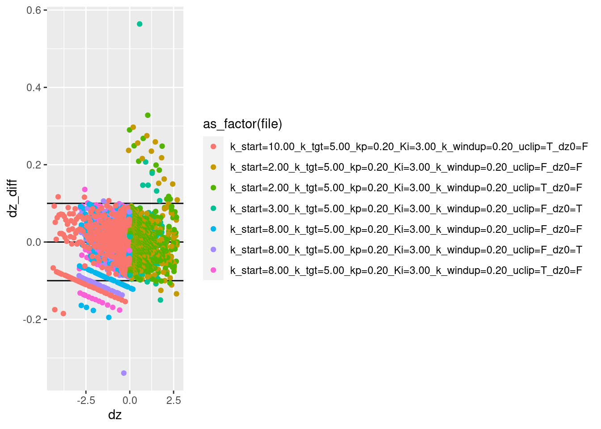
| Version | Author | Date |
|---|---|---|
| a683bb1 | Ross Gayler | 2021-07-07 |
Most of the estimated velocities are within the calculated range of approximation error.
There are a modest number of points between the calculated errors bound and three times the error bound.
There are a few points with error more than three times the error bound.
The estimated velocity is likely to have larger estimation errors when the acceleration is high, because the velocity is changing more rapidly. Take a look at velocity estimation error as a function of acceleration.
# velocity_error ~ acceleration
d %>% ggplot() +
geom_hline(yintercept = c(-0.1, 0, 0.1)) +
geom_smooth(aes(x = d2z_est, y = dz_diff)) +
geom_point(aes(x = d2z_est, y = dz_diff, colour = as_factor(file)))`geom_smooth()` using method = 'gam' and formula 'y ~ s(x, bs = "cs")'Warning: Removed 7 rows containing non-finite values (stat_smooth).Warning: Removed 7 rows containing missing values (geom_point).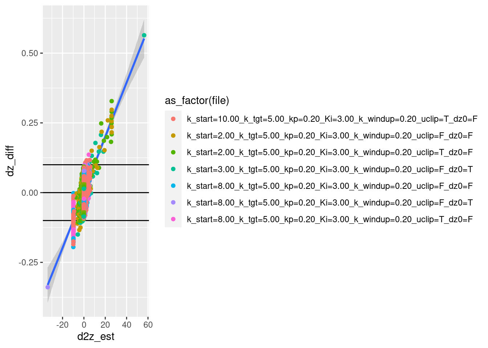
| Version | Author | Date |
|---|---|---|
| a683bb1 | Ross Gayler | 2021-07-07 |
I am happy that the input altitude and velocity are correctly related.
Plot the relationships between the major nodes. This is not necessarily of immediate use in deciding the design fo VSA components, but gives a feel for the dynamics of the system.
Show the values of the major nodes as a function of time.
p <- d_wide %>%
dplyr::mutate(
k_start = k_start %>% forcats::as_factor(),
d2z = (dz - lag(dz, n = 1, default = NA)) / 0.010 # get vertical acceleration
) %>%
ggplot(aes(x = t, group = file, colour = k_start))
p + geom_path(aes(y = z))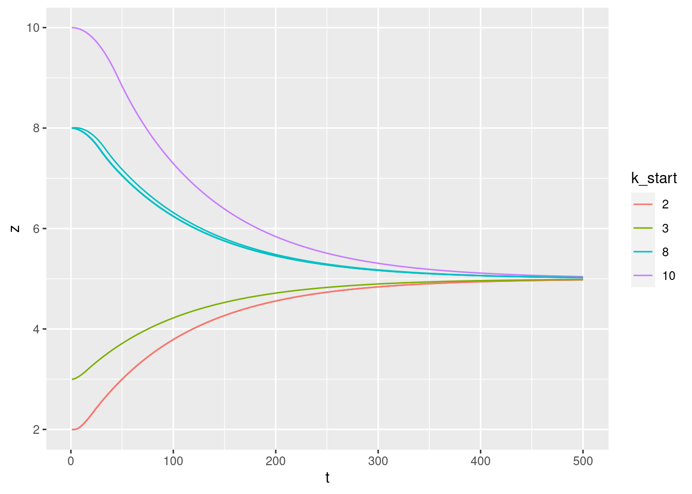
| Version | Author | Date |
|---|---|---|
| a683bb1 | Ross Gayler | 2021-07-07 |
Altitude versus time:
p + geom_path(aes(y = dz))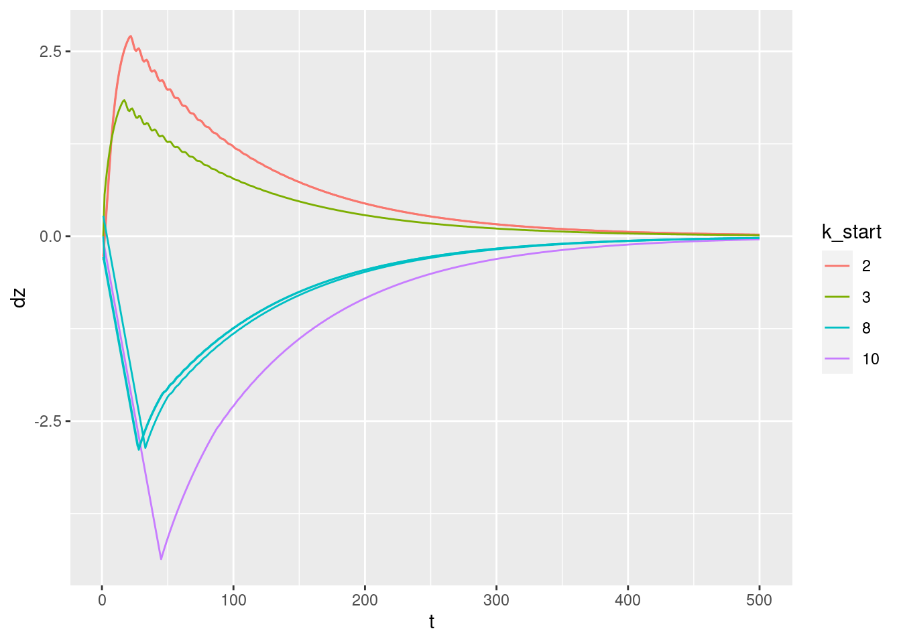
| Version | Author | Date |
|---|---|---|
| a683bb1 | Ross Gayler | 2021-07-07 |
Velocity versus time:
Zoom in on the oscillation in the \(k_{start} = 2\) curve to see how the oscillation is aligned with the sampling rate.
d_wide %>%
dplyr::mutate(
k_start = k_start %>% forcats::as_factor(),
d2z = (dz - lag(dz, n = 1, default = NA)) / 0.010 # get vertical acceleration
) %>%
dplyr::filter(k_start == 2) %>%
ggplot(aes(x = t, group = file, colour = k_start)) +
geom_path(aes(y = dz)) +
geom_point(aes(y = dz)) +
coord_cartesian(xlim = c(25, 45), ylim = c(2.0, 2.6))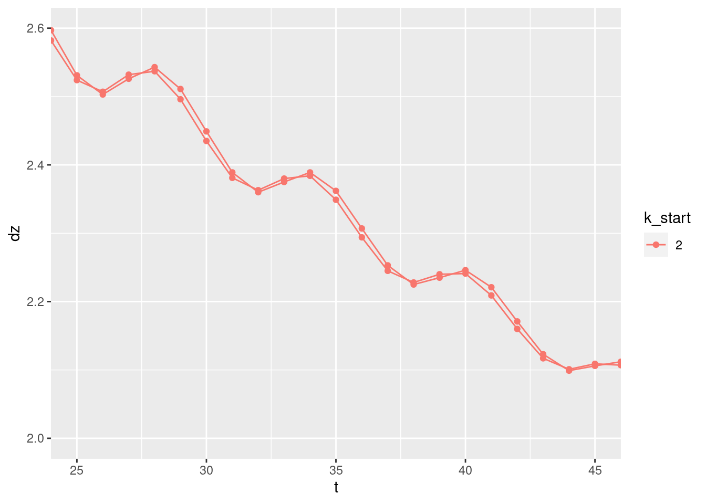
| Version | Author | Date |
|---|---|---|
| a683bb1 | Ross Gayler | 2021-07-07 |
Note that the acceleration should be directly related to the motor power command.
p + geom_path(aes(y = d2z))Warning: Removed 1 row(s) containing missing values (geom_path).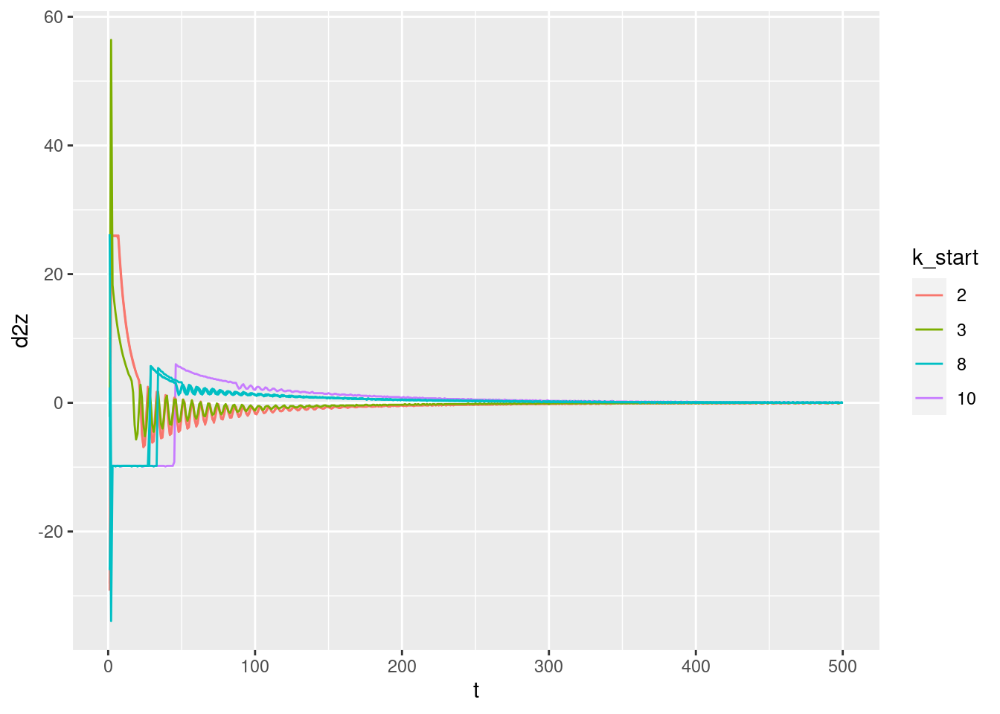
| Version | Author | Date |
|---|---|---|
| a683bb1 | Ross Gayler | 2021-07-07 |
Acceleration versus time:
Zoom in on the spikes at the start of the curves.
d_wide %>%
dplyr::mutate(
k_start = k_start %>% forcats::as_factor(),
d2z = (dz - lag(dz, n = 1, default = NA)) / 0.010 # get vertical acceleration
) %>%
ggplot(aes(x = t, group = file, colour = k_start)) +
geom_path(aes(y = d2z)) +
geom_point(aes(y = d2z)) +
coord_cartesian(xlim = c(1, 20))Warning: Removed 1 row(s) containing missing values (geom_path).Warning: Removed 1 rows containing missing values (geom_point).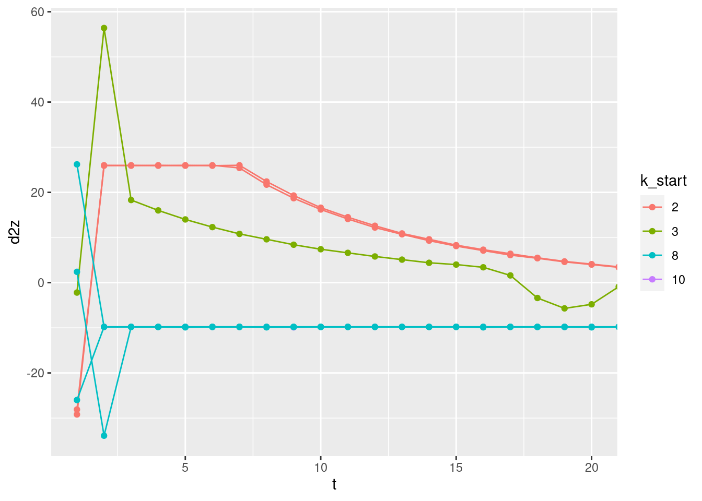
| Version | Author | Date |
|---|---|---|
| a683bb1 | Ross Gayler | 2021-07-07 |
The acceleration should be maximum and constant when the motor command is 0 or 1. This corresponds to the flat initial segments for starting altitude 2 or 8 metres (10 metres is not visible because of overplotting).
The curves look reasonable from time \(t = 3\) onwards.
Re-plot the acceleration curve excluding \(t < 3\).
p + geom_path(aes(y = d2z)) +
coord_cartesian(xlim = c(3, NA), ylim = c(-10, 30))Warning: Removed 1 row(s) containing missing values (geom_path).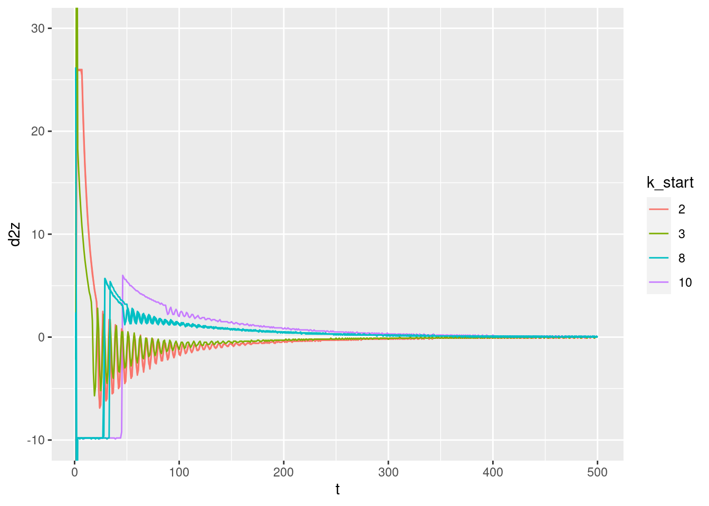
| Version | Author | Date |
|---|---|---|
| a683bb1 | Ross Gayler | 2021-07-07 |
p + geom_path(aes(y = e))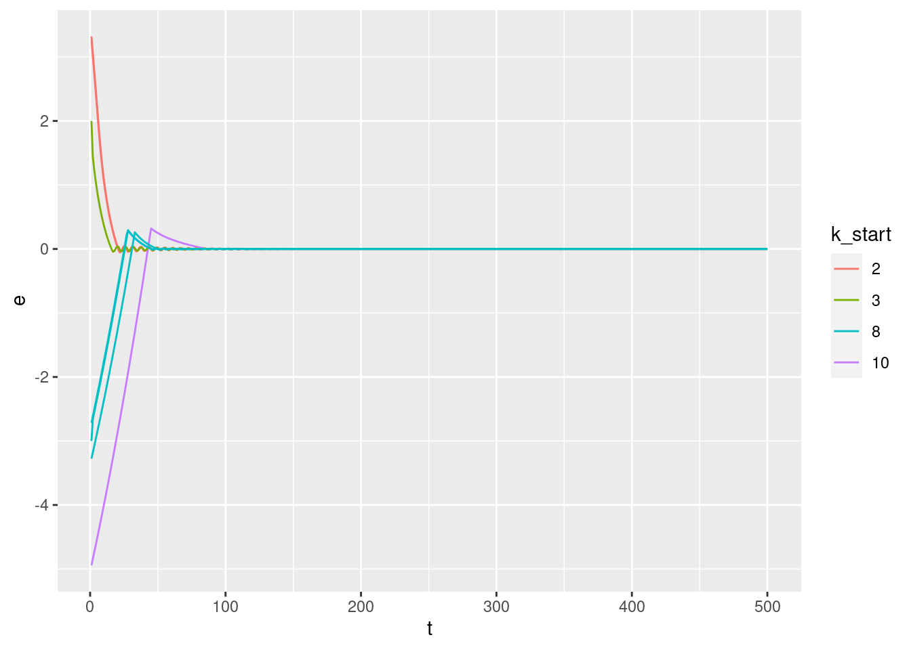
| Version | Author | Date |
|---|---|---|
| a683bb1 | Ross Gayler | 2021-07-07 |
Error versus time:
Zoom in on the heads of the curves to see if they really oscillate around zero.
p +
geom_hline(yintercept = 0) +
geom_path(aes(y = e)) +
geom_point(aes(y = e)) +
coord_cartesian(xlim = c(10, 100), ylim = c(-0.2, 0.4))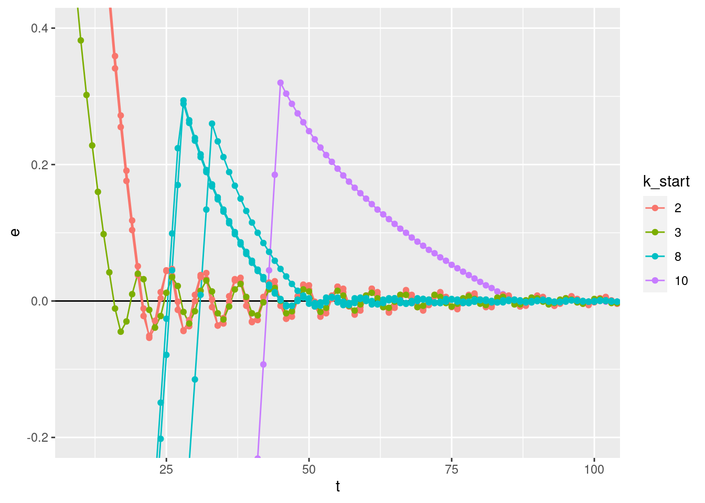
Zoom in on the tails of the curves to see how close the error term approaches zero.
p +
geom_hline(yintercept = 0) +
geom_path(aes(y = e)) +
geom_point(aes(y = e)) +
coord_cartesian(xlim = c(100, 250), ylim = c(-0.003, 0.003))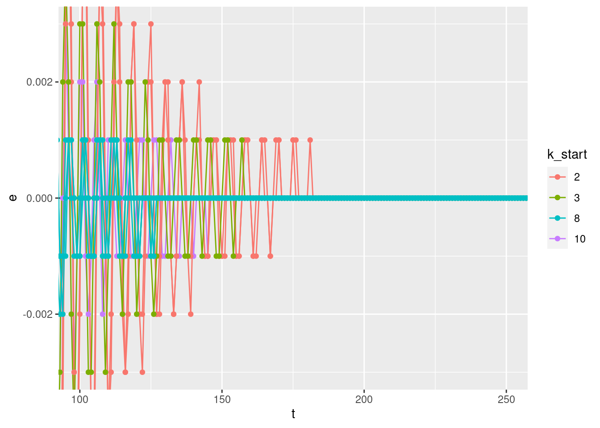
p + geom_path(aes(y = ei))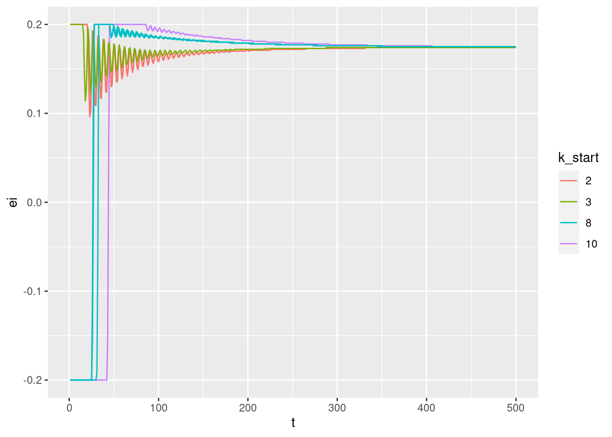
Integrated error versus time:
p + geom_path(aes(y = u))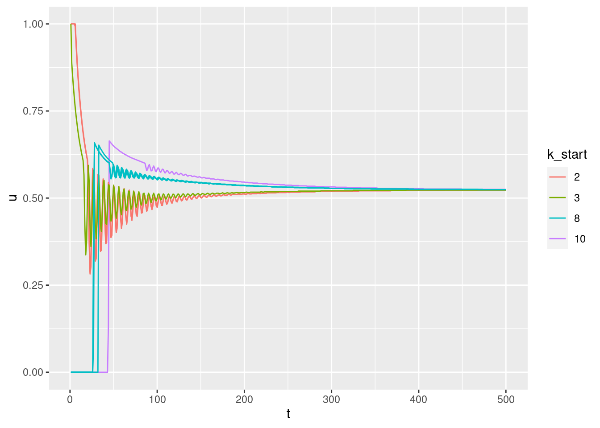
Motor command versus time:
Show the values of the major nodes (\(z\), \(dz\), \(e\), \(ei\), and \(u\), augmented with estimated acceleration: \(d2z\)) as a function of each other (pair plots) with time implicit. There’s no commentary on these graphs - just enjoy the pretty pictures.
Start the curves at time \(t = 3\) to avoid the artifacts in the estimated acceleration seen in first two time steps.
Place an arrow head on each curve to indicate the direction of time. Because the curves tend to converge on the same location I have placed the arrow head at the beginning of each curve (\(t = 3\)). The arrow head points in the direction of increasing time.
p <- d_wide %>%
dplyr::mutate(
k_start = k_start %>% forcats::as_factor(),
d2z = (dz - lag(dz, n = 1, default = NA)) / 0.010 # get vertical acceleration
) %>%
dplyr::filter(t >= 3) %>%
ggplot(aes(group = file, colour = k_start))
a <- grid::arrow(ends = "first", angle = 150, type = "closed")
###
p + geom_vline(xintercept = 5) + geom_hline(yintercept = 0) +
geom_path(aes(x = z, y = dz), arrow = a, alpha = 0.2) +
geom_point(aes(x = z, y = dz), size = 0.1)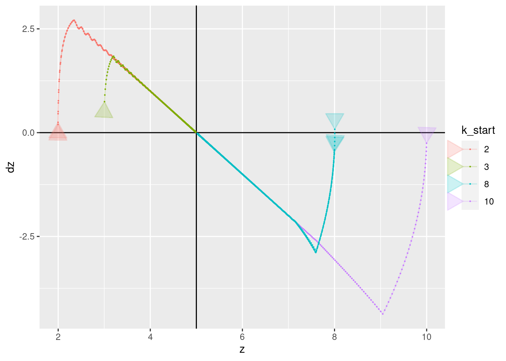
| Version | Author | Date |
|---|---|---|
| a683bb1 | Ross Gayler | 2021-07-07 |
p + geom_vline(xintercept = 5) + geom_hline(yintercept = 0) +
geom_path(aes(x = z, y = d2z), arrow = a, alpha = 0.2) +
geom_point(aes(x = z, y = d2z), size = 0.1)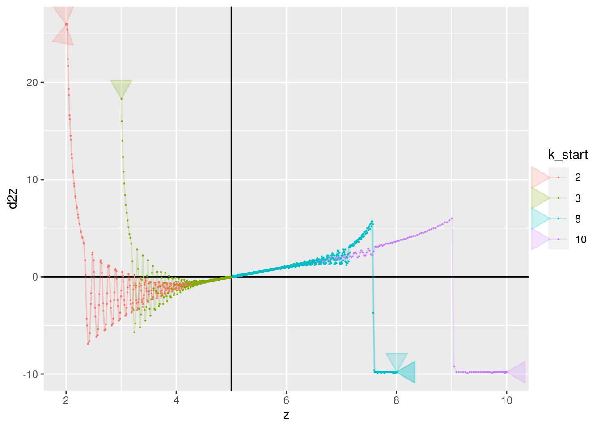
| Version | Author | Date |
|---|---|---|
| a683bb1 | Ross Gayler | 2021-07-07 |
p + geom_vline(xintercept = 5) + geom_hline(yintercept = 0) +
geom_path(aes(x = z, y = e), arrow = a, alpha = 0.2) +
geom_point(aes(x = z, y = e), size = 0.1)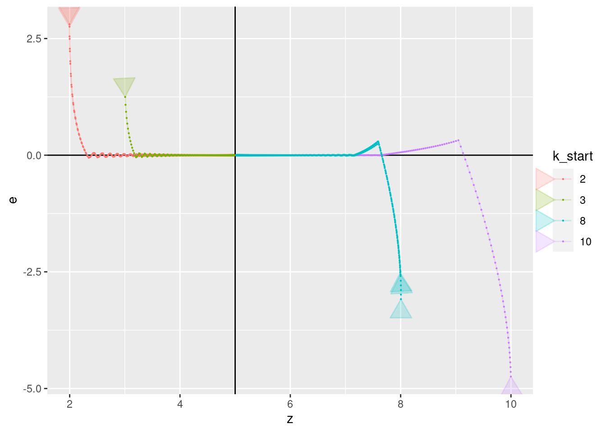
| Version | Author | Date |
|---|---|---|
| a683bb1 | Ross Gayler | 2021-07-07 |
p + geom_vline(xintercept = 5) + geom_hline(yintercept = 0.175) +
geom_path(aes(x = z, y = ei), arrow = a, alpha = 0.2) +
geom_point(aes(x = z, y = ei), size = 0.1)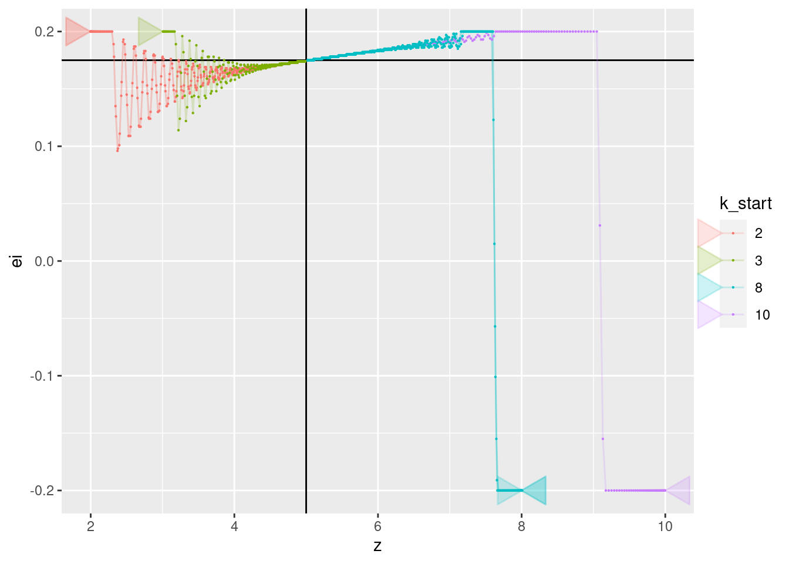
| Version | Author | Date |
|---|---|---|
| a683bb1 | Ross Gayler | 2021-07-07 |
p + geom_vline(xintercept = 5) + geom_hline(yintercept = 0.524) +
geom_path(aes(x = z, y = u), arrow = a, alpha = 0.2) +
geom_point(aes(x = z, y = u), size = 0.1)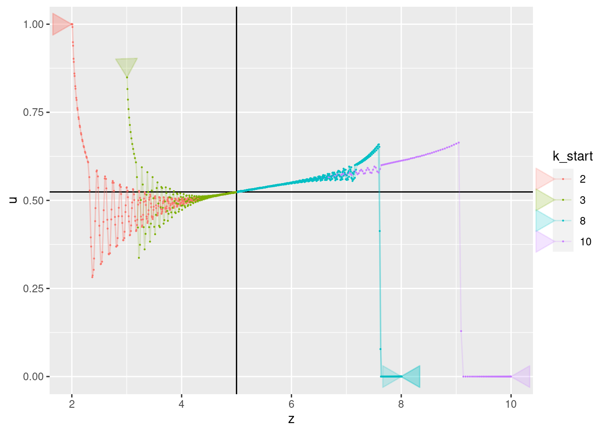
| Version | Author | Date |
|---|---|---|
| a683bb1 | Ross Gayler | 2021-07-07 |
###
p + geom_vline(xintercept = 0) + geom_hline(yintercept = 0) +
geom_path(aes(x = dz, y = d2z), arrow = a, alpha = 0.2) +
geom_point(aes(x = dz, y = d2z), size = 0.1)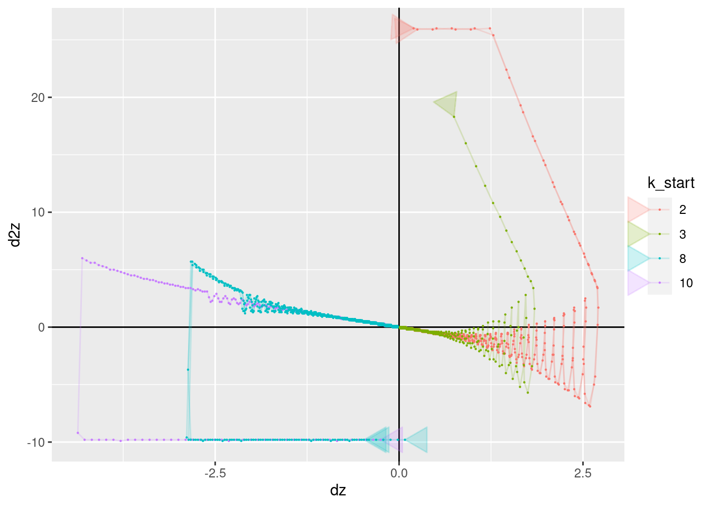
| Version | Author | Date |
|---|---|---|
| a683bb1 | Ross Gayler | 2021-07-07 |
p + geom_vline(xintercept = 0) + geom_hline(yintercept = 0) +
geom_path(aes(x = dz, y = e), arrow = a, alpha = 0.2) +
geom_point(aes(x = dz, y = e), size = 0.1)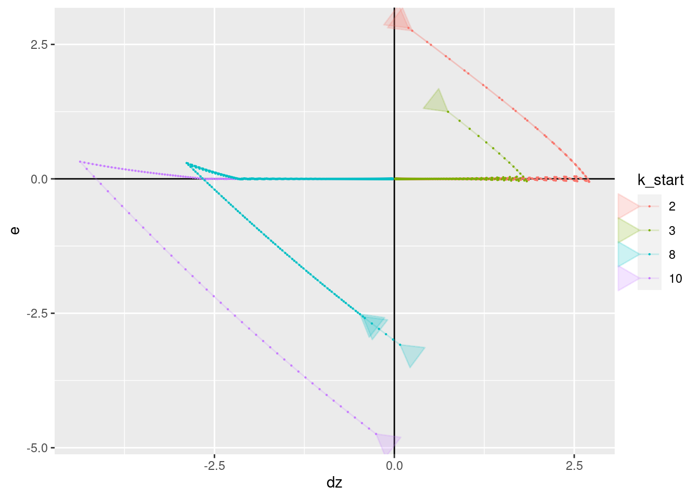
| Version | Author | Date |
|---|---|---|
| a683bb1 | Ross Gayler | 2021-07-07 |
p + geom_vline(xintercept = 0) + geom_hline(yintercept = 0.175) +
geom_path(aes(x = dz, y = ei), arrow = a, alpha = 0.2) +
geom_point(aes(x = dz, y = ei), size = 0.1)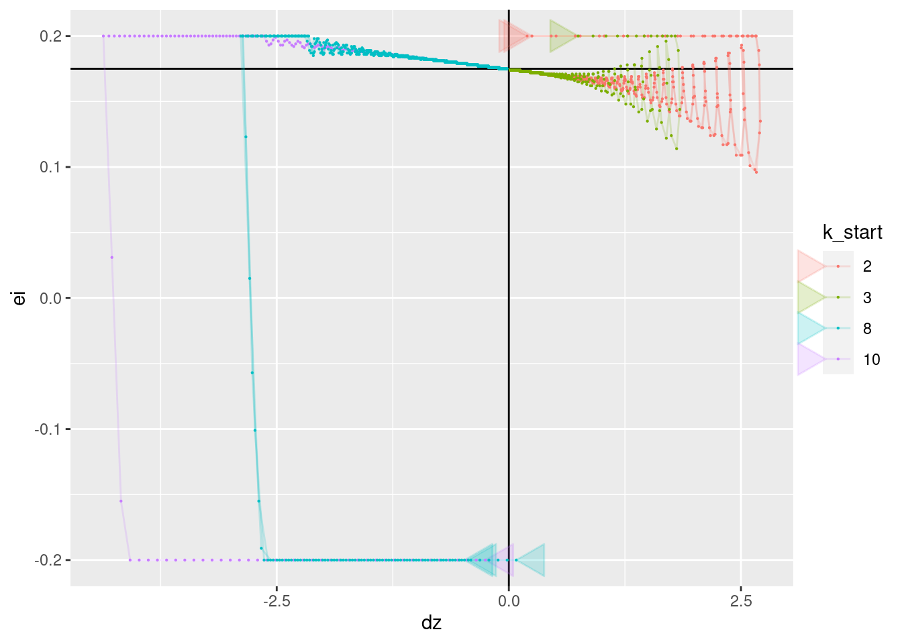
| Version | Author | Date |
|---|---|---|
| a683bb1 | Ross Gayler | 2021-07-07 |
p + geom_vline(xintercept = 0) + geom_hline(yintercept = 0.524) +
geom_path(aes(x = dz, y = u), arrow = a, alpha = 0.2) +
geom_point(aes(x = dz, y = u), size = 0.1)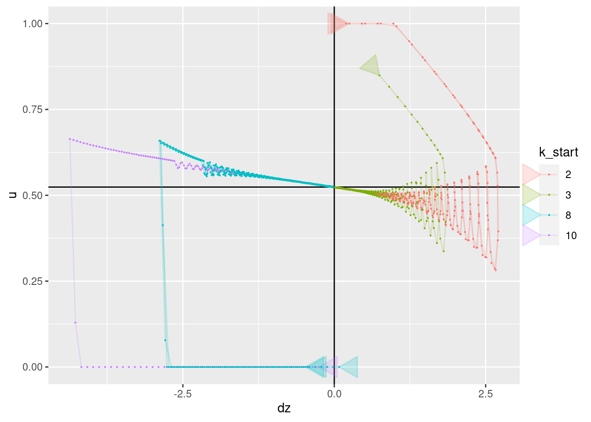
| Version | Author | Date |
|---|---|---|
| a683bb1 | Ross Gayler | 2021-07-07 |
###
p + geom_vline(xintercept = 0) + geom_hline(yintercept = 0) +
geom_path(aes(x = d2z, y = e), arrow = a, alpha = 0.2) +
geom_point(aes(x = d2z, y = e), size = 0.1)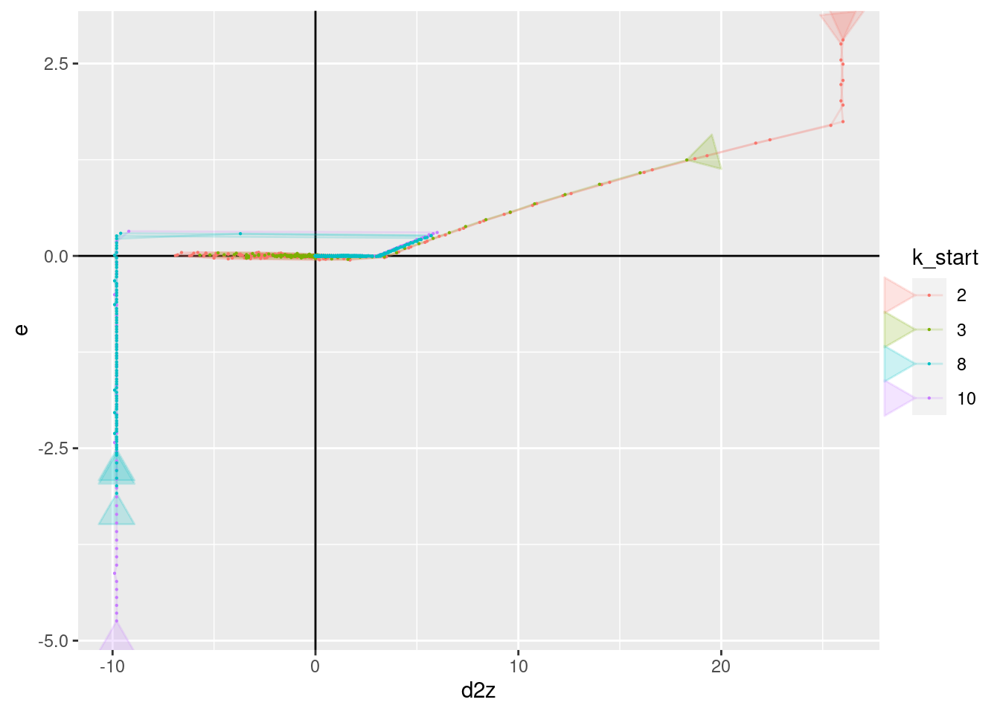
| Version | Author | Date |
|---|---|---|
| a683bb1 | Ross Gayler | 2021-07-07 |
p + geom_vline(xintercept = 0) + geom_hline(yintercept = 0.175) +
geom_path(aes(x = d2z, y = ei), arrow = a, alpha = 0.2) +
geom_point(aes(x = d2z, y = ei), size = 0.1)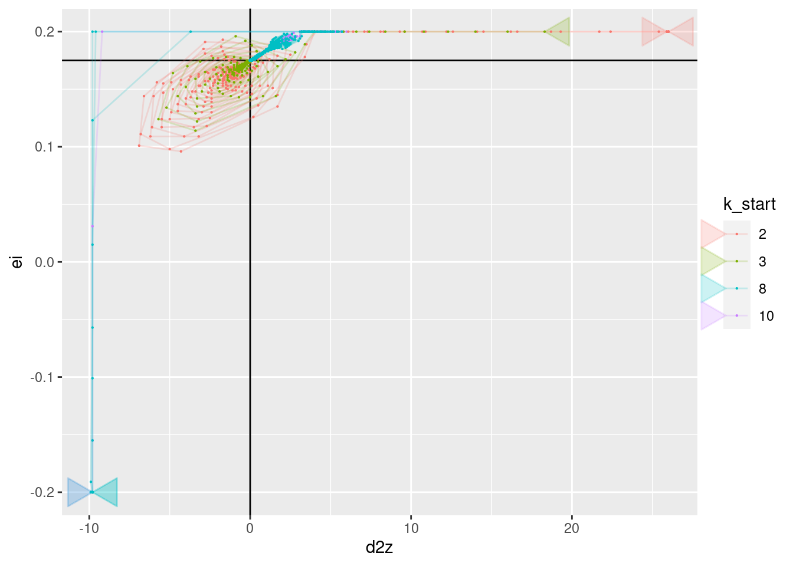
| Version | Author | Date |
|---|---|---|
| a683bb1 | Ross Gayler | 2021-07-07 |
p + geom_vline(xintercept = 0) + geom_hline(yintercept = 0.524) +
geom_path(aes(x = d2z, y = u), arrow = a, alpha = 0.2) +
geom_point(aes(x = d2z, y = u), size = 0.1)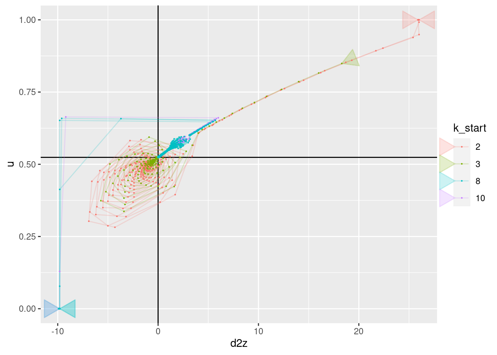
| Version | Author | Date |
|---|---|---|
| a683bb1 | Ross Gayler | 2021-07-07 |
###
p + geom_vline(xintercept = 0) + geom_hline(yintercept = 0.175) +
geom_path(aes(x = e, y = ei), arrow = a, alpha = 0.2) +
geom_point(aes(x = e, y = ei), size = 0.1)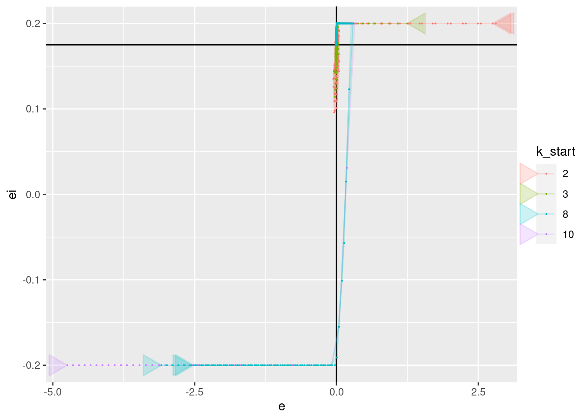
| Version | Author | Date |
|---|---|---|
| a683bb1 | Ross Gayler | 2021-07-07 |
p + geom_vline(xintercept = 0) + geom_hline(yintercept = 0.524) +
geom_path(aes(x = e, y = u), arrow = a, alpha = 0.2) +
geom_point(aes(x = e, y = u), size = 0.1)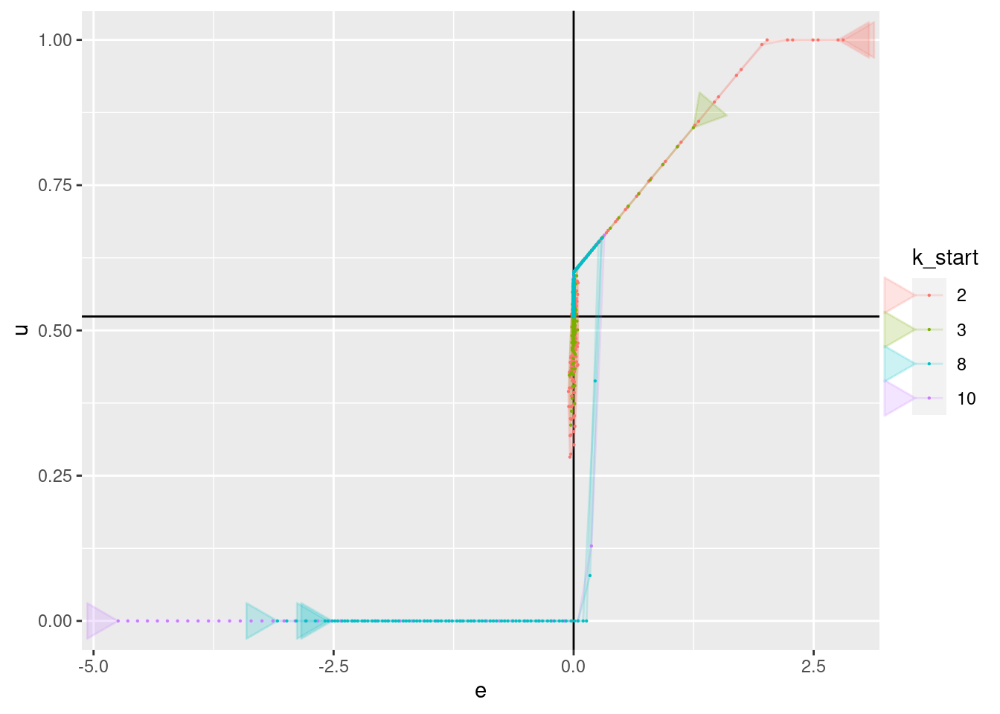
| Version | Author | Date |
|---|---|---|
| a683bb1 | Ross Gayler | 2021-07-07 |
###
p + geom_vline(xintercept = 0.175) + geom_hline(yintercept = 0.524) +
geom_path(aes(x = ei, y = u), arrow = a, alpha = 0.2) +
geom_point(aes(x = ei, y = u), size = 0.1)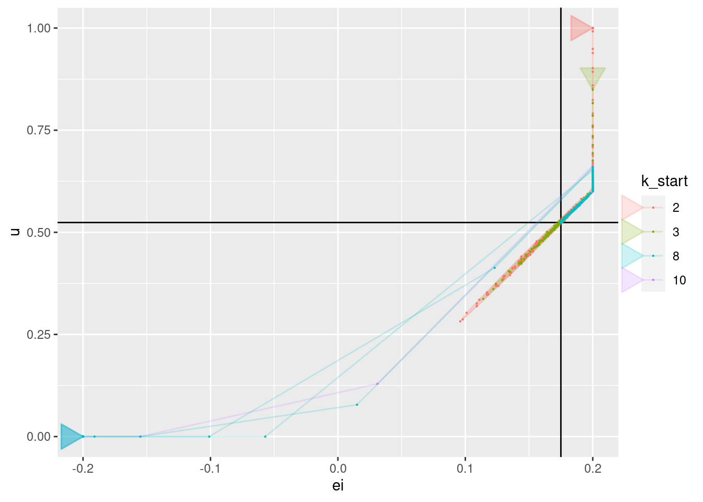
| Version | Author | Date |
|---|---|---|
| a683bb1 | Ross Gayler | 2021-07-07 |
Look at the distributions of the values of all the nodes of the data flow diagram.
Note that these distributions are calculated over all the input files pooled.
Also note that the concept of a distribution is somewhat suspect when applied to an arbitrary selection of nonstationary signals.
Display a quick summary of the distributions of values of all the nodes (except the parameter nodes) and those internal nodes which are identical to imported nodes (\(i2 := e\), \(i5 := ei\), and \(i8 := u\)).
The observed minimum (\(p0\)) and maximum (\(p100\)) will inform the value ranges of the corresponding VSA representations.
d_wide %>%
dplyr::select(z:u, i1, i3, i4, i6, i7) %>%
skimr::skim()| Name | Piped data |
| Number of rows | 3500 |
| Number of columns | 10 |
| _______________________ | |
| Column type frequency: | |
| numeric | 10 |
| ________________________ | |
| Group variables | None |
Variable type: numeric
| skim_variable | n_missing | complete_rate | mean | sd | p0 | p25 | p50 | p75 | p100 | hist |
|---|---|---|---|---|---|---|---|---|---|---|
| z | 0 | 1 | 5.22 | 1.15 | 2.00 | 4.85 | 5.05 | 5.44 | 10.00 | ▁▇▃▁▁ |
| dz | 0 | 1 | -0.17 | 0.98 | -4.37 | -0.43 | -0.05 | 0.15 | 2.71 | ▁▁▅▇▁ |
| e | 0 | 1 | -0.05 | 0.46 | -4.94 | 0.00 | 0.00 | 0.00 | 3.32 | ▁▁▇▁▁ |
| ei | 0 | 1 | 0.16 | 0.07 | -0.20 | 0.17 | 0.17 | 0.18 | 0.20 | ▁▁▁▁▇ |
| u | 0 | 1 | 0.51 | 0.11 | 0.00 | 0.52 | 0.52 | 0.53 | 1.00 | ▁▁▇▁▁ |
| i1 | 0 | 1 | -0.22 | 1.15 | -5.00 | -0.44 | -0.05 | 0.15 | 3.00 | ▁▁▃▇▁ |
| i3 | 0 | 1 | -0.01 | 0.09 | -0.99 | 0.00 | 0.00 | 0.00 | 0.66 | ▁▁▇▁▁ |
| i4 | 0 | 1 | 0.12 | 0.52 | -5.04 | 0.17 | 0.17 | 0.18 | 3.50 | ▁▁▁▇▁ |
| i6 | 0 | 1 | 0.49 | 0.21 | -0.60 | 0.52 | 0.52 | 0.53 | 0.60 | ▁▁▁▁▇ |
| i7 | 0 | 1 | 0.48 | 0.29 | -1.59 | 0.52 | 0.52 | 0.53 | 1.26 | ▁▁▁▇▁ |
Look at the detailed distribution of all the nodes (except the parameter nodes) and those internal nodes which are identical to imported nodes (\(i2 := e\), \(i5 := ei\), and \(i8 := u\)).
The distributions will give some idea about how much different regions of the value ranges are used.
Use a logarithmic scale for the counts to bring out the detail in the low density areas.
Also, divide the ranges into quintiles to give an idea of where range boundaries might be if we used a low resolution representation (effectively dividing each value range into “high negative”, “medium negative”, “neutral”, “medium positive”, “high positive”). This is relevant to the question of value resolution.
d_node <- d_wide %>%
dplyr::select(z:u, i1, i3, i4, i6, i7) %>%
tidyr::pivot_longer(cols = everything(), names_to = "node", values_to = "value")
d_quintile <- d_node %>%
dplyr::group_by(node) %>%
dplyr::summarise(
p01 = quantile(value, probs = 0.01, names = FALSE),
p02 = quantile(value, probs = 0.02, names = FALSE),
p05 = quantile(value, probs = 0.05, names = FALSE),
p20 = quantile(value, probs = 0.2, names = FALSE),
p40 = quantile(value, probs = 0.4, names = FALSE),
p60 = quantile(value, probs = 0.6, names = FALSE),
p80 = quantile(value, probs = 0.8, names = FALSE),
p95 = quantile(value, probs = 0.95, names = FALSE),
p98 = quantile(value, probs = 0.98, names = FALSE),
p99 = quantile(value, probs = 0.99, names = FALSE)
)
d_node %>%
ggplot(aes(x = value)) +
facet_wrap(facets = vars(node), ncol = 2, scales = "free") +
geom_histogram(bins = 50) +
scale_y_log10() +
geom_vline(data = d_quintile, aes(xintercept = p01), colour = "orange", linetype = "dotted") +
geom_vline(data = d_quintile, aes(xintercept = p02), colour = "orange", linetype = "dashed") +
geom_vline(data = d_quintile, aes(xintercept = p05), colour = "orange", linetype = "solid") +
geom_vline(data = d_quintile, aes(xintercept = p20), colour = "red", linetype = "dashed") +
geom_vline(data = d_quintile, aes(xintercept = p40), colour = "red", linetype = "solid") +
geom_vline(data = d_quintile, aes(xintercept = p60), colour = "red", linetype = "solid") +
geom_vline(data = d_quintile, aes(xintercept = p80), colour = "red", linetype = "dashed") +
geom_vline(data = d_quintile, aes(xintercept = p95), colour = "orange", linetype = "solid") +
geom_vline(data = d_quintile, aes(xintercept = p98), colour = "orange", linetype = "dashed") +
geom_vline(data = d_quintile, aes(xintercept = p99), colour = "orange", linetype = "dotted")Warning: Transformation introduced infinite values in continuous y-axisWarning: Removed 84 rows containing missing values (geom_bar).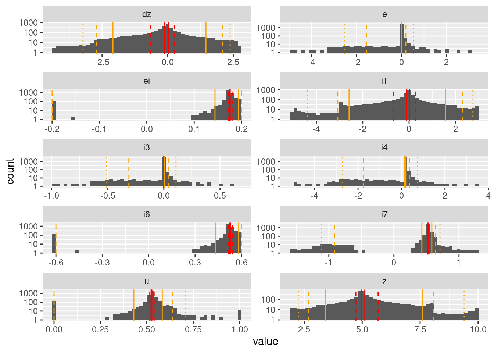
| Version | Author | Date |
|---|---|---|
| a683bb1 | Ross Gayler | 2021-07-07 |
Values which are driven to a target (\(z\), \(i1\), \(dz\), \(e\), \(i3\)) have unimodal distributions.
Values driven by the integrated error (\(ei\), \(i6\), \(i7\)) have bimodal distributions.
The values of motor command (\(u\)) have a trimodal distribution (full on, full off, hovering).
The quintiles are very closely clustered around the principal mode of each distribution. This indicates that a quintile-based resolution would not be very useful.
VSA representations, like any physical implementation have limited value resolution. In this section I would like find the value resolution that is required by the PID controller in order to work satisfactorily. I won’t be doing that because that is probably more effort than is justified at this stage. A proper answer to that question would probably involve something like injecting noise into the value at each node to see how PID performance decreases as noise is increased.
Instead, I will try to get some feel for the effective value resolution in the classically implemented PID controller. I will do this by looking at the distribution of the differences between successive values. The intuition behind this is that the differences between successive values represent the increments in which the state of the dynamic system evolves.
This analysis will not provide any conclusive answers. Rather, it will provide some context for later thinking about the VSA designs.
I expect that the initial VSA designs will be thoroughly over-resourced, so that they have far more value resolution than is required for implementation of the PID controller.
Look at the distributions of absolute differences of successive values at each node.
Exclude observations where the successive difference is zero, because eventually all node values will converge to a steady state which is uninteresting and can be arbitrarily prolonged.
# function to calculate the absolute successive difference
abs_diff <- function(
x # numeric - vector of values at successive time steps
) # value # numeric - vector of absolute values of first differences
{
(x - dplyr::lag(x)) %>% abs()
}
d_node <- d_wide %>%
dplyr::select(file, t, z:u, i1, i3, i4, i6, i7) %>%
dplyr::arrange(file, t) %>% # guarantee correct order for successive differences
dplyr::group_by(file) %>%
dplyr::mutate(
across(z:i7, abs_diff)
) %>%
dplyr::ungroup() %>%
dplyr::select(-file, -t) %>%
tidyr::pivot_longer(cols = everything(), names_to = "node", values_to = "value") %>%
dplyr::filter(!is.na(value) & value > 0) # exclude rows with zero change
# calculate quantiles for each node
d_quintile <- d_node %>%
dplyr::group_by(node) %>%
dplyr::summarise(
p01 = quantile(value, probs = 0.01, names = FALSE),
p02 = quantile(value, probs = 0.02, names = FALSE),
p05 = quantile(value, probs = 0.05, names = FALSE),
p20 = quantile(value, probs = 0.2, names = FALSE),
p40 = quantile(value, probs = 0.4, names = FALSE),
p60 = quantile(value, probs = 0.6, names = FALSE),
p80 = quantile(value, probs = 0.8, names = FALSE),
p95 = quantile(value, probs = 0.95, names = FALSE),
p98 = quantile(value, probs = 0.98, names = FALSE),
p99 = quantile(value, probs = 0.99, names = FALSE)
)
d_node %>%
ggplot(aes(x = value)) +
facet_wrap(facets = vars(node), ncol = 2, scales = "free") +
geom_histogram(bins = 50) +
scale_x_log10() +
scale_y_log10() +
geom_vline(data = d_quintile, aes(xintercept = p01), colour = "orange", linetype = "dotted") +
geom_vline(data = d_quintile, aes(xintercept = p02), colour = "orange", linetype = "dashed") +
geom_vline(data = d_quintile, aes(xintercept = p05), colour = "orange", linetype = "solid") +
geom_vline(data = d_quintile, aes(xintercept = p20), colour = "red", linetype = "dashed") +
geom_vline(data = d_quintile, aes(xintercept = p40), colour = "red", linetype = "solid") +
geom_vline(data = d_quintile, aes(xintercept = p60), colour = "red", linetype = "solid") +
geom_vline(data = d_quintile, aes(xintercept = p80), colour = "red", linetype = "dashed") +
geom_vline(data = d_quintile, aes(xintercept = p95), colour = "orange", linetype = "solid") +
geom_vline(data = d_quintile, aes(xintercept = p98), colour = "orange", linetype = "dashed") +
geom_vline(data = d_quintile, aes(xintercept = p99), colour = "orange", linetype = "dotted")Warning: Transformation introduced infinite values in continuous y-axisWarning: Removed 149 rows containing missing values (geom_bar).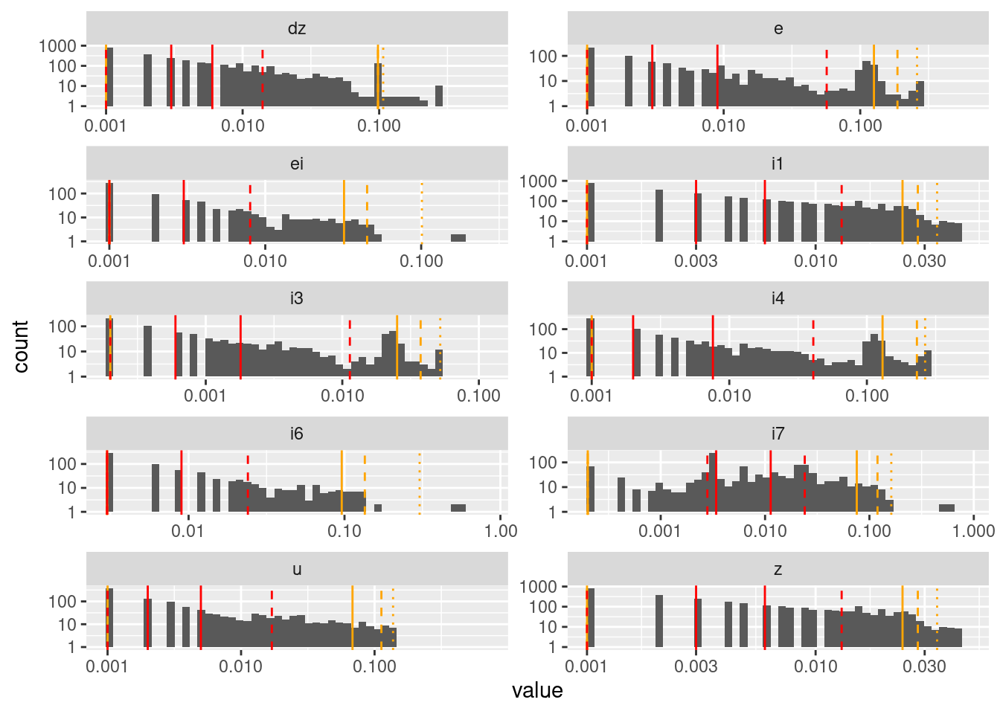
| Version | Author | Date |
|---|---|---|
| a683bb1 | Ross Gayler | 2021-07-07 |
The pattern of separated bars is due to the values being quantised to three decimal places.
Successive differences are very heavily concentrated near zero for all nodes.
Some nodes (\(dz\), \(e\), \(i3\), \(i4\)) have a secondary mode that is clearly nonzero.
Node \(i7\) has a possibly bimodal distribution.
I don’t know that I would draw any conclusions from that analysis, other than that most values evolve in small increments, and when the increments are large it is probably in the initial stages of detecting and reacting to a large mismatch to the target.
Temporal resolution is possibly even more problematic than value resolution.
I will look at the power spectra of the values. The data being analysed here is generated by the classically implemented simulation. So the frequencies with relatively higher power will be interpreted as important to the dynamics of the classically implemented PID controller.
Looking at the earlier plots of values as a function of time, I would expect the low frequencies to be prominent as many of the curves show a slow and smooth approach to a target value.
However, there will be some high frequency components corresponding to the sudden turning on or off of the motors.
I also expect to see some frequency component corresponding to the observed oscillatory behaviour. However, this might not be essential to the dynamics of the PID as I suspect the oscillation is an undesired behaviour that could be removed by tuning.
I will look at the power spectrum for each node, for each simulation file.
# function to spectral analyse one time series as a frame
spec_an <- function(
d # data frame - contains a "value" column
) # value # spectrum object - result of spectral analysis of d
{
spec_obj <- d %>%
dplyr::pull(value) %>% # get the time series of values
scale() %>% # centre and standardise the time series
spectrum(
method = "pgram", detrend = FALSE, plot = FALSE
) # return a spectrum object
tibble(freq = spec_obj[["freq"]], spec = spec_obj[["spec"]])
}
d_wide %>%
dplyr::select(file, k_start, t, z:u, i1, i3, i4, i6, i7) %>%
dplyr::arrange(file, t) %>% # guarantee correct order
tidyr::pivot_longer(cols = z:i7, names_to = "node", values_to = "value") %>%
tidyr::nest(file_node = c(t, value)) %>% # analysis per file x node
dplyr::mutate(
spectrum = file_node %>% map(spec_an), # calculate the spectra
file = file %>% forcats::fct_reorder(k_start), # reorder levels of file by k_start
k_start = k_start %>% forcats::as_factor(), # make k_start a factor in numeric order
node = node %>% forcats::fct_relevel(
c("z", "i1", "dz", "e", "i3", "i4", "ei", "i6", "i7", "u")
) # reorder levels of node
) %>%
dplyr::select(file, k_start, node, spectrum) %>%
dplyr::filter(node %in% # keep non-redundant nodes
c("z", "dz", "e", "i4", "ei", "i7", "u")
) %>%
tidyr::unnest(cols = spectrum) %>%
ggplot() +
geom_path(aes(x = freq, y = spec, colour = k_start)) +
scale_y_log10() +
facet_grid(rows = vars(file), cols = vars(node))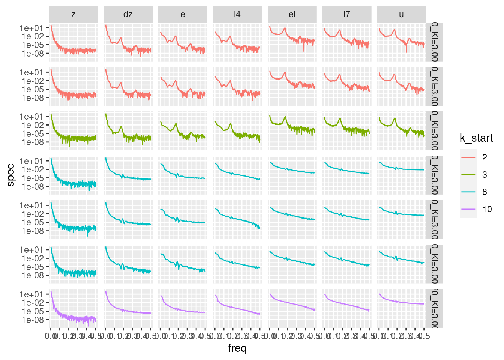
| Version | Author | Date |
|---|---|---|
| a683bb1 | Ross Gayler | 2021-07-07 |
Some nodes are redundant because they have identical spectra to other nodes. The redundant nodes have been removed from the plot.
The frequency scale is linear and the maximum corresponds to 50Hz.
The \(z\) (altitude) spectra are very similar across all starting heights (files).
They show the greatest (across nodes) concentration of energy at low frequencies.
This is expected because the altitude trajectories showed a smooth approach to the target.
The spectra of the remaining nodes show a lesser concentration of energy at low frequencies.
There is a general trend for the spectrum to become flatter as the node gets closer in the data flow diagram to the motor command \(u\).
The spectra of the remaining nodes show different patterns depending on whether the starting height is below (2m, 3m) or above (8m, 10m) the target height.
Simulations starting below the target show a distinct spectral peak at ~18Hz (a cycle duration of ~5.6 time steps). This corresponds to the oscillations which are prominent in the trajectories of the simulations starting below the target height.
For the simulations starting above the target height there is a hint of a peak at ~19Hz (a cycle duration of ~5.3 time steps). Presumably, this corresponds to the same oscillation mechanism, which is only barely activated when starting above the target height.
For the simulations starting below the target height there is a slight peak at ~34Hz (a cycle duration of ~2.9 time steps). Presumably, this is related to the 18Hz oscillation.
If I am going to draw any tentative conclusions from this it is that:
sessionInfo()R version 4.1.0 (2021-05-18)
Platform: x86_64-pc-linux-gnu (64-bit)
Running under: Ubuntu 21.04
Matrix products: default
BLAS: /usr/lib/x86_64-linux-gnu/blas/libblas.so.3.9.0
LAPACK: /usr/lib/x86_64-linux-gnu/lapack/liblapack.so.3.9.0
locale:
[1] LC_CTYPE=en_AU.UTF-8 LC_NUMERIC=C
[3] LC_TIME=en_AU.UTF-8 LC_COLLATE=en_AU.UTF-8
[5] LC_MONETARY=en_AU.UTF-8 LC_MESSAGES=en_AU.UTF-8
[7] LC_PAPER=en_AU.UTF-8 LC_NAME=C
[9] LC_ADDRESS=C LC_TELEPHONE=C
[11] LC_MEASUREMENT=en_AU.UTF-8 LC_IDENTIFICATION=C
attached base packages:
[1] stats graphics grDevices datasets utils methods base
other attached packages:
[1] purrr_0.3.4 tidyr_1.1.3 ggplot2_3.3.5 forcats_0.5.1 skimr_2.1.3
[6] stringr_1.4.0 DT_0.18 dplyr_1.0.7 vroom_1.5.1 here_1.0.1
[11] fs_1.5.0
loaded via a namespace (and not attached):
[1] tidyselect_1.1.1 xfun_0.24 repr_1.1.3 lattice_0.20-44
[5] splines_4.1.0 colorspace_2.0-2 vctrs_0.3.8 generics_0.1.0
[9] htmltools_0.5.1.1 mgcv_1.8-36 yaml_2.2.1 base64enc_0.1-3
[13] utf8_1.2.1 rlang_0.4.11 later_1.2.0 pillar_1.6.1
[17] glue_1.4.2 withr_2.4.2 bit64_4.0.5 lifecycle_1.0.0
[21] munsell_0.5.0 gtable_0.3.0 workflowr_1.6.2 htmlwidgets_1.5.3
[25] evaluate_0.14 labeling_0.4.2 knitr_1.33 tzdb_0.1.1
[29] crosstalk_1.1.1 httpuv_1.6.1 parallel_4.1.0 fansi_0.5.0
[33] highr_0.9 Rcpp_1.0.6 renv_0.13.2 promises_1.2.0.1
[37] scales_1.1.1 jsonlite_1.7.2 farver_2.1.0 bit_4.0.4
[41] digest_0.6.27 stringi_1.6.2 bookdown_0.22 rprojroot_2.0.2
[45] grid_4.1.0 cli_3.0.0 tools_4.1.0 magrittr_2.0.1
[49] tibble_3.1.2 crayon_1.4.1 whisker_0.4 pkgconfig_2.0.3
[53] Matrix_1.3-4 ellipsis_0.3.2 rstudioapi_0.13 rmarkdown_2.9
[57] R6_2.5.0 nlme_3.1-152 git2r_0.28.0 compiler_4.1.0